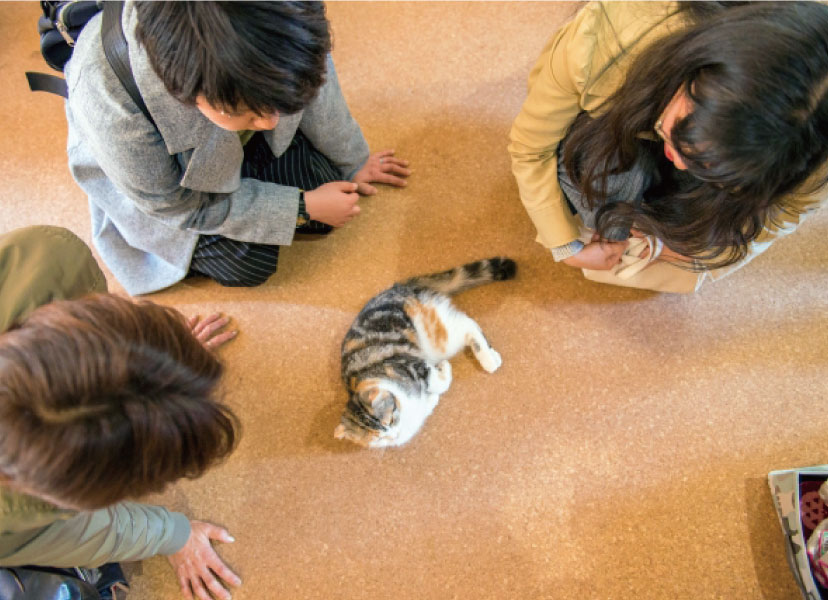
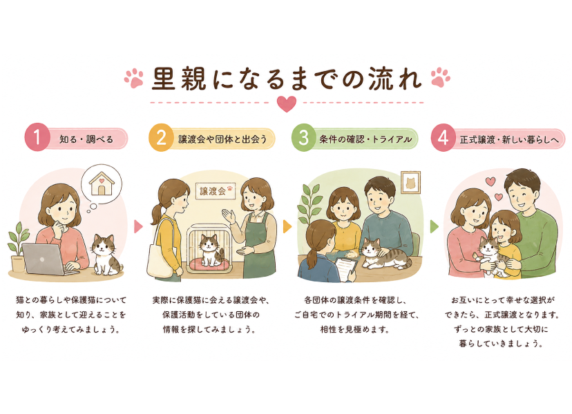
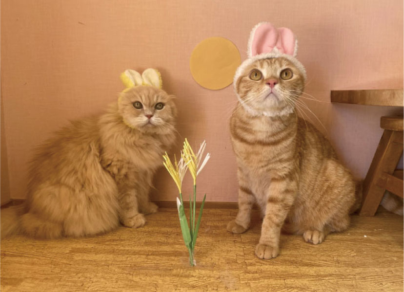

里親募集について
保護猫を家族に迎えたい方へ

保護猫たちと新しい家族との出会いをつなぐために、里親募集についてご案内しています。
保護猫を家族に迎えることは、一つの大切な命を守り、新しい暮らしを共に育んでいくことです。
猫との暮らしには責任もありますが、それ以上にたくさんの幸せや癒やしがあります。猫との相性や迎えたあとの生活をゆっくり考えながら、猫も人も安心して幸せに暮らせる未来を見つけていきましょう。
一匹の猫との出会いが、かけがえのない家族との出会いになります。
※このサイトでは、里親募集や譲渡に関するお問い合わせは受け付けておりません。保護猫を迎えたい方は、お近くの保護猫団体や譲渡会をご利用ください。
里親になるまでの流れ

-
知る・調べる
猫との暮らしや保護猫について知り、家族と迎えることをゆっくり考えます。
-
譲渡会や団体と出会う
保護猫に会える譲渡会や、保護活動をしている団体の情報を探します。
-
条件の確認・トライアル
譲渡条件を確認し、トライアル期間を通して猫との相性を見極めます。
-
正式譲渡・新しい暮らしへ
お互いにとって幸せな選択ができたら、正式譲渡となり、新しい暮らしが始まります。
猫を家族に迎えるということ
猫との暮らしには、毎日の食事や健康管理など、 生涯にわたる責任が伴います。
その一方で、一匹の猫との出会いは、 かけがえのない家族との幸せな時間につながります。
※このサイトでは里親募集や譲渡のお問い合わせは受け付けておりません。
保護猫を迎えたい方は、お近くの保護猫団体や譲渡会をご利用ください。

猫を迎える前に
- 家族全員が猫を迎えることに同意している
- 毎日の食事やトイレ、健康管理ができる
- 住まいで猫を飼うことが認められている
- 生涯にわたって責任を持って飼育できる
猫たちとの出会いを探してみませんか？
それぞれの猫の個性を知り、家族として迎えることを考えてみましょう。
猫たちに会いに行く